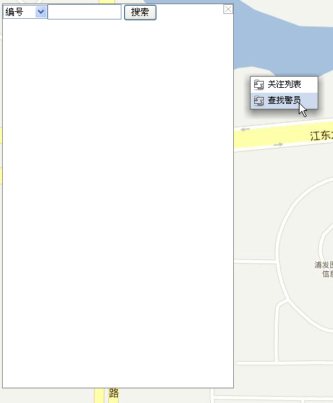

在地图主界面点击右键可查找移动用户。
 查找移动用户步骤如下：
查找移动用户步骤如下：
1）调度用户成功登录GIS系统后，在地图的任何位置点击右键，在弹出的右键菜单选择“查找警员”，弹出“查找警员”对话框，如下图所示：

查找警员
2）在对话框里选择查找的条件，比如要查找一个编号为1008的警员，则在查询条件下拉框里选择“编号”，再在后面的文本框里输入1008，最后点击“搜索”按扭。系统就会在本调度台所有的下属单位中查找编号有1008的警员，查找结果如下图所示。
查找警员结果图
3）符合查找条件的的所有用户（包括显示和隐藏的）都将呈现在用户列表中，并且提供显示、隐藏、调度、短信、应用等操作。同时，用户也可在列表中点击警员的“姓名”查看某一警员的详细信息。
Copyright © 2012 Eastcom, Inc. All rights reserved. |
||